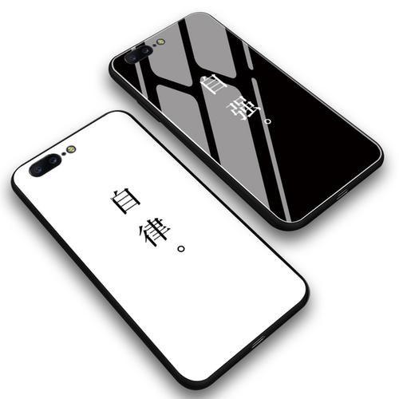
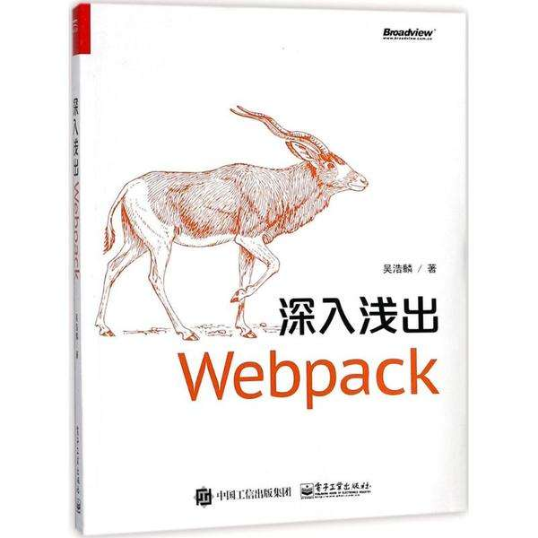

你好，我是徐望
一位前端工程师
关于我 我的作品
关于我
我叫徐望，20年本科应届生，坐标长沙，是一名前端工程师。在做前端之前，我还学过C语言，可惜当初没有好好学习，导致现在也没有掌握C语言的美妙。 大二的时候学了JAVA语言，后来还考了JAVA计算机二级，但是我自认JAVA学的马马虎虎，到了大二的时候，其实我还不确定我是否可以做一名程序员。 在大三的时候，专业分流，我选择了人工智能方向，接触了Python语言，NLP，爬虫，在学习这些内容的时候，我逐渐找到了信心，也在学爬虫的时候，了解了JS逆向工程， 慢慢的开始学习Web前端，后来也认定把Web前端作为工作方向，这就是我的职业道路探索之旅。
学习的路还很长，我会一直沿着前端的方向走，许多人说我最好转后端，我觉得，前端做到一定程度，必然而然会学到后端，用到后端，但是不代表放弃前端，相反，我在用后端的同时让自己的前端作品越来越好。
技术栈

前端框架
熟悉微信小程序 / Vue
有多个项目实例，详情可见我的作品集

前端工程
了解Babel / Webpack
在前端工程和前端模块部分的实战经验较为欠缺
后端基础
掌握JAVA / Node.js / Python
JAVA / Node.js / Python三种语言均有实战经验，理论部分较为欠缺
数据库
掌握MySQL / MongoDB
掌握两种数据库的增删查改，库表设计及三范式等
版本管理 / 接口测试
了解Git / SVN / Postman
平时使用Git完成版本管理，使用Postman实现接口测试，在实习期间使用SVN完成协同开发
作品集
做项目的时候，我会根据项目需求以及deadline来进行技术选型，如果有时间，我更加喜欢尝试新技术


我的经历
-
01/2020
-
10/2019
广州火星实践科技有限公司技术部/前端工程师
负责火星实习微信小程序搜索业务抽屉开发，渲染性能提高 4倍 以上；
参与公司微信小程序分享海报开发，与产品对接，产出一套通用的海报分享体系；
主导开发火星实践微信小程序登录流程；
微信搜索"火星实践","火星实习","校企课堂"小程序可查看
-
06/2020
-
09/2016
-
01/2020
-
10/2019
广州火星实践科技有限公司技术部/前端工程师
负责火星实习微信小程序搜索业务抽屉开发，渲染性能提高 4倍 以上；
参与公司微信小程序分享海报开发，与产品对接，产出一套通用的海报分享体系；
主导开发火星实践微信小程序登录流程；
微信搜索"火星实践","火星实习","校企课堂"小程序可查看
-
06/2020
-
09/2016
联系我
18874936653@163.com
© 徐望